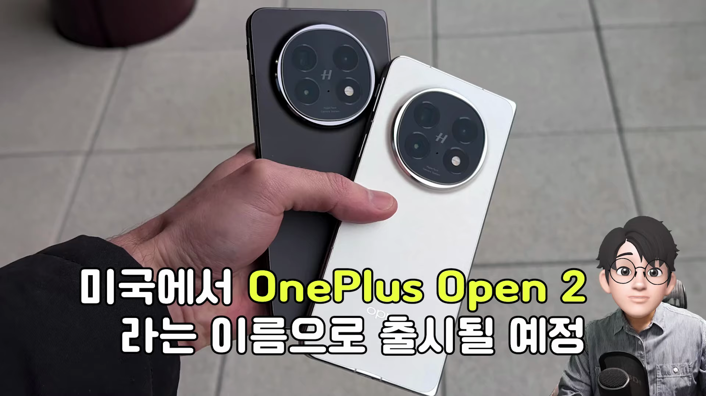
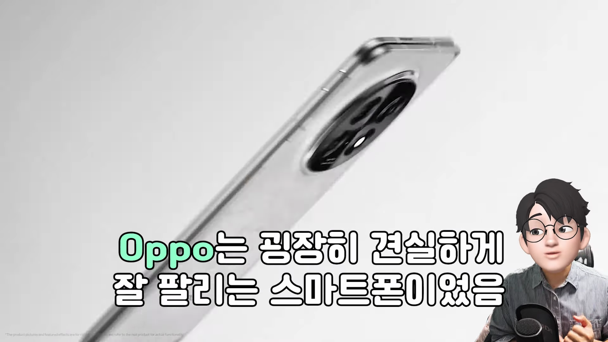
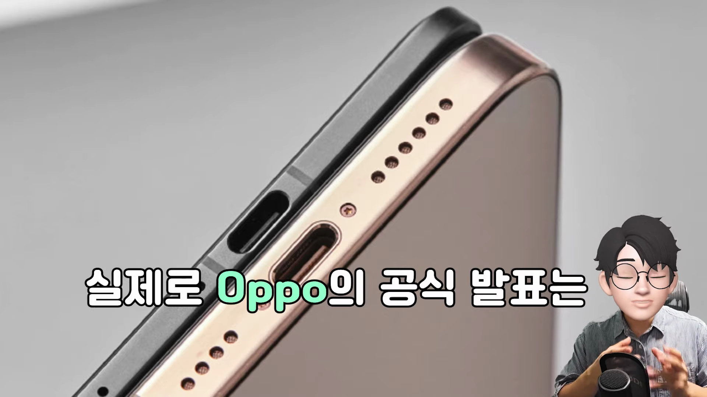
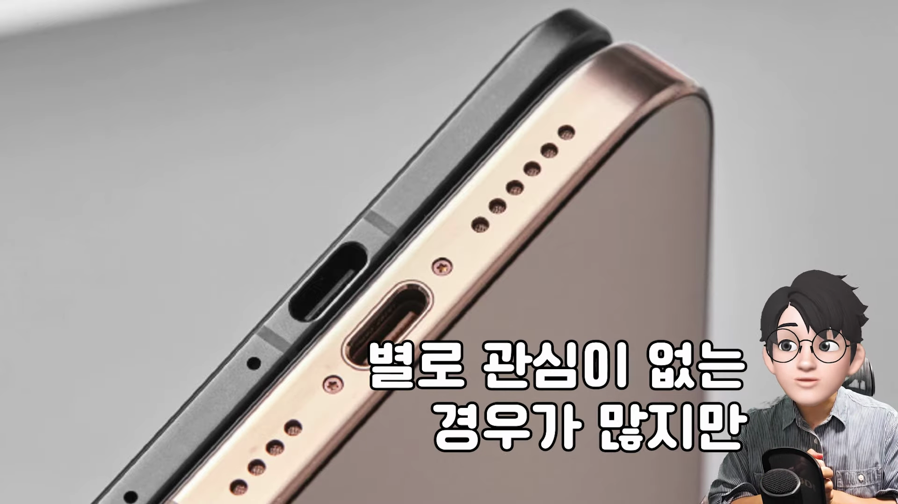
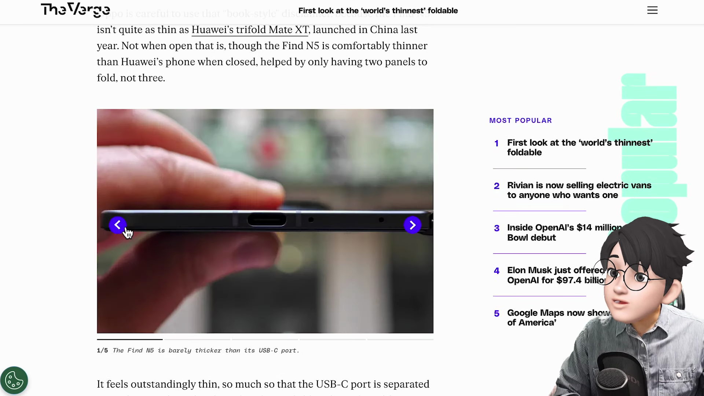
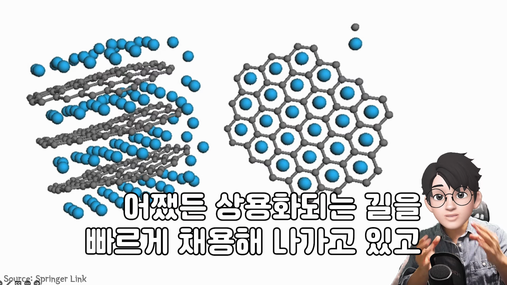
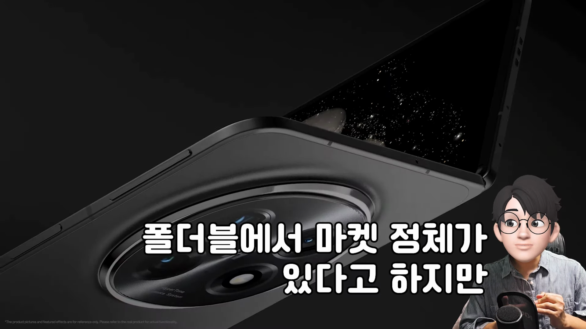

이 포스트에서는 OPPO에서 새롭게 출시 예정인 폴더블 스마트폰, 원플러스 오픈 2에 대한 최신 정보를 정리해 보았습니다. 이 기기는 세상에서 가장 얇은 폴더블 스마트폰으로 주목받고 있으며, 디자인, 성능, 최첨단 기술을 모두 갖춘 제품입니다. 다양한 특징과 장점을 살펴보며 이 스마트폰이 어떤 혁신을 가져올지 함께 알아보겠습니다. 
원플러스 오픈 2 출시 예정
- 미국에서 원플러스 오픈 2로 출시 예정
- 현재 중국에서 보라색 버전 출시 중
미국에서 원플러스 오픈 2라는 이름으로 출시에 대한 기대가 모이고 있으며, 현재는 중국에서 보라색 버전이 출시되고 있습니다.
가장 얇은 폴더블 스마트폰
- 세상에서 가장 얇은 폴더블 스마트폰
- OPPO의 최신 기술이 적용
이 스마트폰은 현재 세상에서 가장 얇은 폴더블 스마트폰으로 이목을 끌고 있으며, OPPO의 혁신적인 기술력으로 탄생했습니다.

디자인과 두께 비교
- 금색 아이폰 16 Pro Max와 비교
- OPPO의 두께는 절반 정도 수준
OPPO의 새로운 폴더블 스마트폰은 금색 아이폰 16 Pro Max보다 훨씬 얇은 디자인을 채택하여 두께 전쟁에서 큰 화제를 모으고 있습니다.

글로벌 출시 일정
- 싱가포르에서 2월 20일 글로벌 출시
- 국내에서 중국 스마트폰의 시장 점유율 비교
원플러스 오픈 2는 싱가포르에서 2월 20일에 글로벌 출시될 예정이며, 국내에서는 중국 스마트폰의 인기가 상대적으로 낮은 상황입니다.

중국 스마트폰의 폴더블폰 발전
- 중국에서의 폴더블폰 기술 발전
- 삼성을 제외한 경쟁 제조사들
중국 스마트폰 제조사들은 현재 폴더블 분야에서도 치열한 경쟁을 벌이고 있으며, 폴더블폰의 기술 발전이 두드러지고 있습니다.

내구성 및 방수 방진 기능
- 방수 방진 등급 IPX8 및 IPX9
- 내구성 테스트 및 성능 평가
이 스마트폰은 방수와 방진 등급에서 IPX8 및 IPX9를 획득하며, 내구성이 크게 향상된 모습을 보여줍니다.
최신 프로세서와 성능
- 퀄컴 스냅드래곤 8 엘리트 모델 채택
- 전력 관리 및 배터리 성능 개선
원플러스 오픈 2는 퀄컴 스냅드래곤 8 엘리트 모델을 탑재하여 최상의 성능을 제공하며, 전력 관리에 대한 혁신적인 접근이 기대됩니다.

중국 스마트폰 산업에 대한 인사이트
- 중국 내부의 경쟁 상황
- 폴더블폰의 정체기 극복 시도
중국 스마트폰 산업은 현재 경쟁이 치열하며, 특히 폴더블폰 시장에서의 혁신과 발전이 진행되고 있습니다.

마무리 및 기대
- 새로운 폴더블폰의 도전
- 중국 제조사들의 기술력 주목
미국에서의 출시가 기대되는 원플러스 오픈 2는 중국 스마트폰 제조사들이 폴더블 분야에서 보여주는 도전과 혁신의 상징으로 남을 것입니다.
Tags: #폴더블 스마트폰 #OPPO #원플러스 오픈 2 #스마트폰 혁신 #중국 스마트폰 #최신 기술 #기대되는 출시